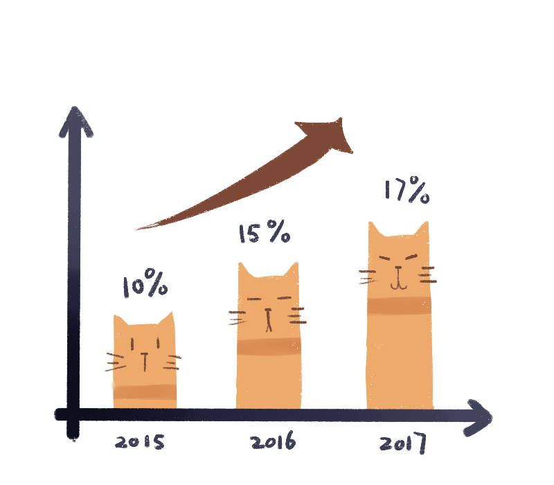
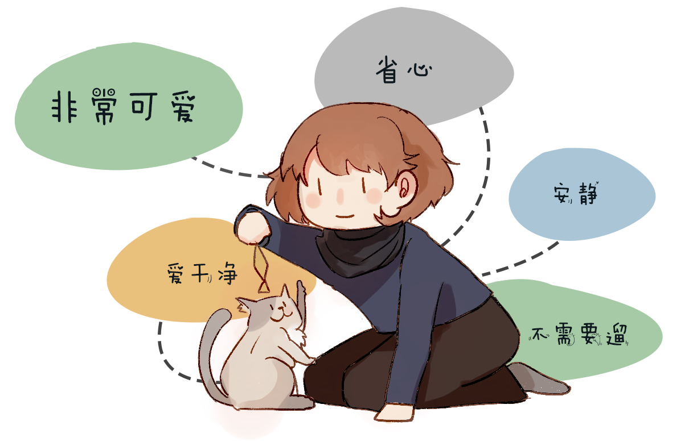
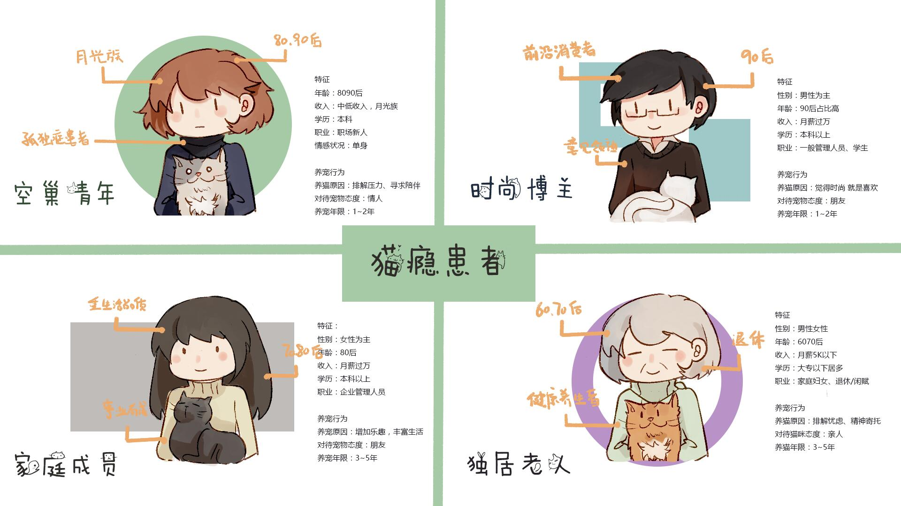
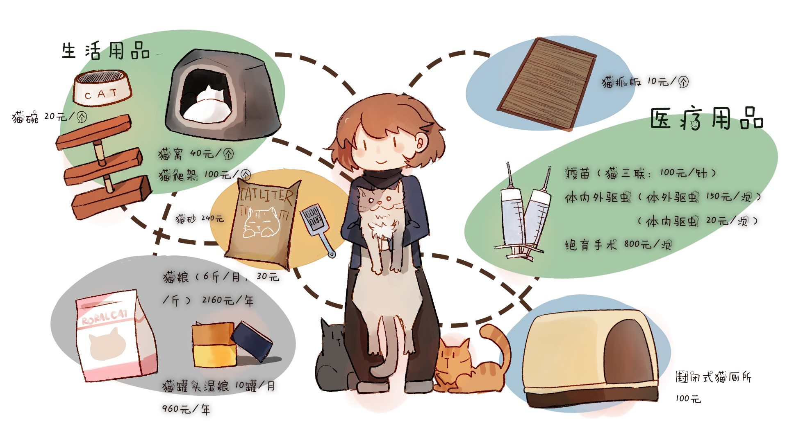

{kind=link}
{kind=link}
{kind=link}

外媒称，在中国共生活着约5300万只猫咪，位居世界第二，仅次于美国。在2017年中国宠物行业白皮书数据称中国养宠家庭正在增加，今年已达到5912万，比较去年增长了2%，约达到了17%。在养宠用户中，养狗家庭比例最高，达到60%，养猫比例接近40%，为39.7%，养猫数量达3756万只。这透露了一个信息，有可能一个养猫用户他拥有猫咪的数量可能远超平均值。
|  |
|
| 吸猫成瘾 撸猫成魔 |
2017年6月29日，湖北某地警局接到报警，报警人称保利中央公馆小区某30岁的男性业主在家中饲养了12只猫，猫尿猫屎臭气熏天，邻居们苦不堪言，且多次投诉无果。猫女士多姿容在家中收养了近300多只猫，严重影响自己与他人的生活……
| 为什么猫咪如此受人热捧？ |
近两年来，“吸猫”、“撸猫”如病毒般蔓延了整个社会，网红猫“楼楼”去世之后，近10万网友在微博上进行了哀悼，足以想象猫duiren的影响有多大。问答社区知乎上，以“猫”为话题的关注人数达18万，而以狗为话题关注人数只有9万。过去的一年，微信公众号“乐话”类榜单中，排名第一的账号是以“猫”为主角的“大爱猫咪控”，人们为这种可爱的生物贡献了2.1亿次阅读量。
|
|
 |
| 养猫的原因 |
养猫不是为了让它看家护院，不是为了让它成为玩具，不是为了招之即来挥之即去，不是为了一时的喜欢和新鲜。比起云养猫的网民们，家中养猫的铲屎官们获得的和感受到更多。 猫对于有些铲屎官来说，它们已经不算是宠物。
|  |
| 养猫人群特征分析 |
通过对养猫人群性别年龄的分析，我们不难发现爱猫人士集中在80，90后这个群体，他们有着较为一致的共性：年轻，学历较高，走在时代前沿，爱猫成魔。除此之外，独居老人对猫咪的需求在于猫咪对老人的陪伴，他们把猫咪当做自己的亲人，爱护有加。以下是四种较为典型的养猫人群分类。
|  |
| 养好一只猫需要花费多少？ |
养好一只猫咪可不像照顾一盆多肉植物那样简单，它需要主人付出相当多的时间，精力与金钱，在一个主人下定决心打算接自己心爱的小猫回家前，应该先明白自己是否有负担起养猫所花费的一切物质与时间成本的能力，养猫不仅仅需要食物和水，还需要各式各样的猫窝，猫玩具，猫砂，以及每年定期注射的疫苗，这些花费加起来，每只猫每年至少要花费4760元人民币，这对于还没有固定收入的学生与职场新人来说，或许是一个不小的负担。
|  |
养宠物是一件需要非常谨慎才能做出的决定，是一件一旦决定就影响一个生命一辈子的事情。一只宠物猫对于主人来说只是生命中一个小小的伙伴，但主人对于宠物猫来说却是整个世界。为什么“云吸猫”在网络上如此风靡？除了这些可爱的小生物的照片与视频散发出令人无法挪开目光的可爱气场，更多是因为大批猫瘾患者还没有拥有能够养好一只猫的条件，养猫要付出超乎想象的时间，精力与金钱，这个庞大的吸猫群体中的大部分是学生或者新入职的职场新人，他们明白如果想要让自己的爱猫获得美好的生活，首先身为主人的自己需要有稳定的居所与收入，在他们心中，“有猫”甚至是一种成功的象征。所以对于没有条件养猫，却又想感受可爱的猫猫带来的治愈的他们来说，“云吸猫”无疑是最好的选择。 各位年轻的猫瘾患者们在快节奏的学习工作中用“云吸猫”来调剂生活，然后继续为了自己“有猫”的未来而奋斗。